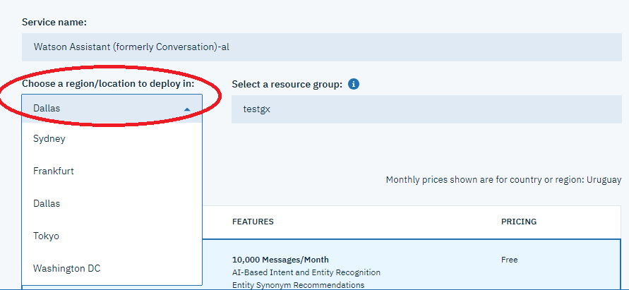
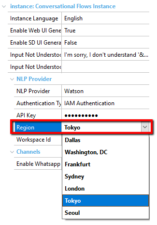

Specifies the Watson Assistant region. Values
Scope Objects: Conversational Flows Instance Description
When the NLP Provider property is set to Watson and Authentication Type property is set to IAM, you have to configure the API key given by IBM in the API Key property and the Region in this property. The Region is the same that you configured in the IBM cloud services contract as the deployment location.  Select that value in the Region combo box (under the NLP Provider section of the Conversational Flows object properties dialog):  To apply changes, save the Conversational Flows object and it will be automatically synchronized to the NLP provider, in addition to updating the GXCF_Chatbots.config file. For more information on this file, go to Connecting to the Chatbot Provider. Configuration fileThe configuration file used for saving the value of this property is the GXCF_Chatbots.config. The file is located in the virtual directory in the case of NET, and in the WEB-INF directory of the servlet server in the case of Java. AvailabilityThis property is available since GeneXus 16 upgrade 10. See Also
|
| Backlinks | |
| Chatbot Generator common errors and solutions | Toc:Chatbots in GeneXus |
| Configuring GeneXus for using the Chatbot Generator |